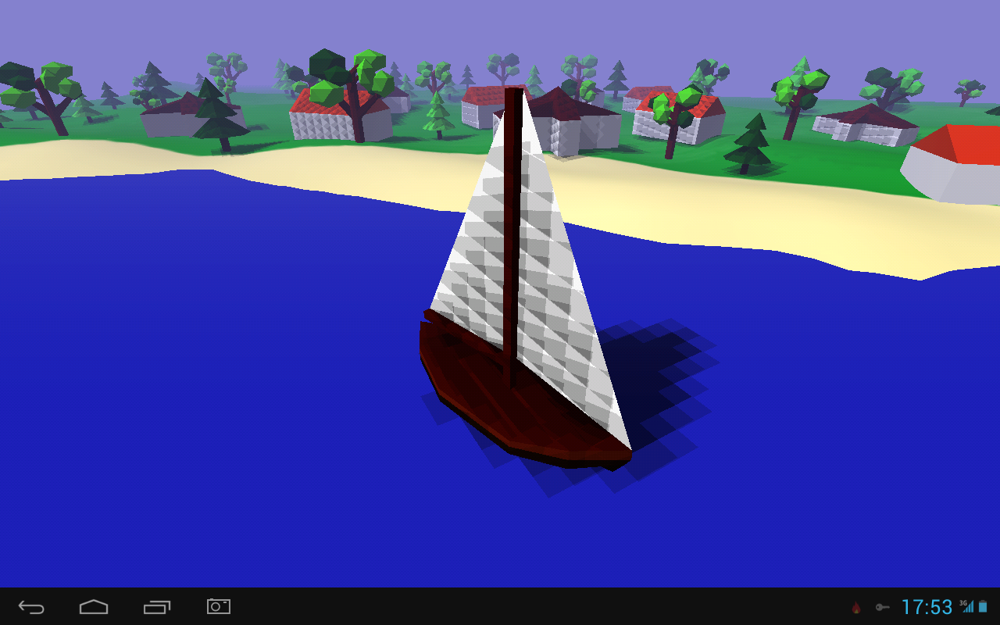

KonstantTom
I don’t know this is it bug or not.
1. This is screenshot from my PC.

2. This is screenshot from my tablet (Prestigio Multipad 4 Quantum).

But when I run application on Bluestacks, picture is similar to picture on PC build. On my phone picture is similar to picture from tablet.
Anybody know this problem? How I can fix it? Or this is problem of my tablet and my phone?